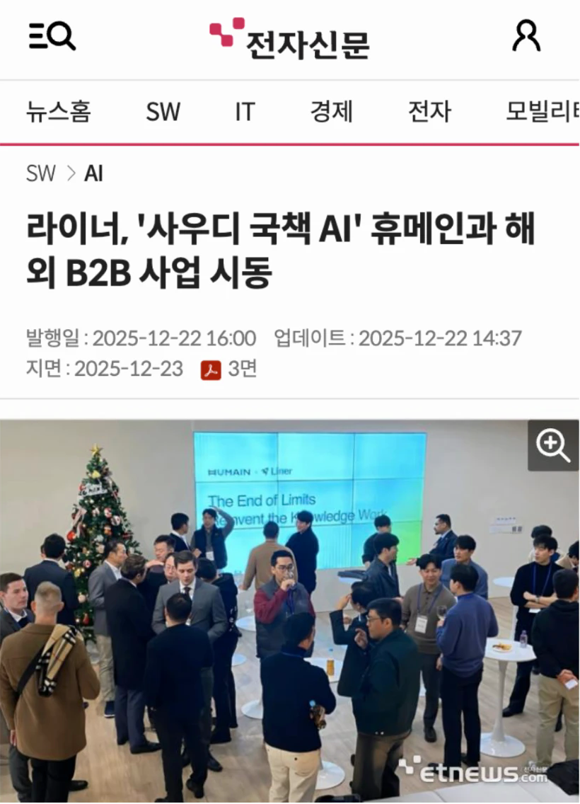
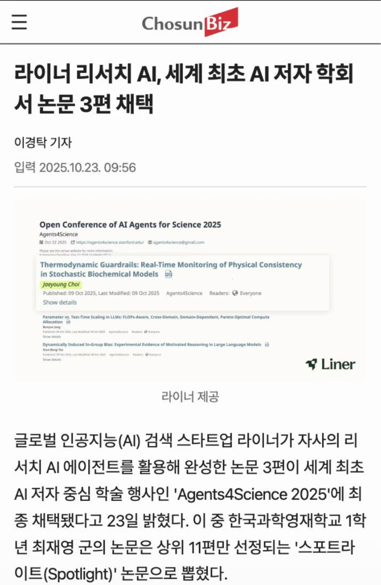
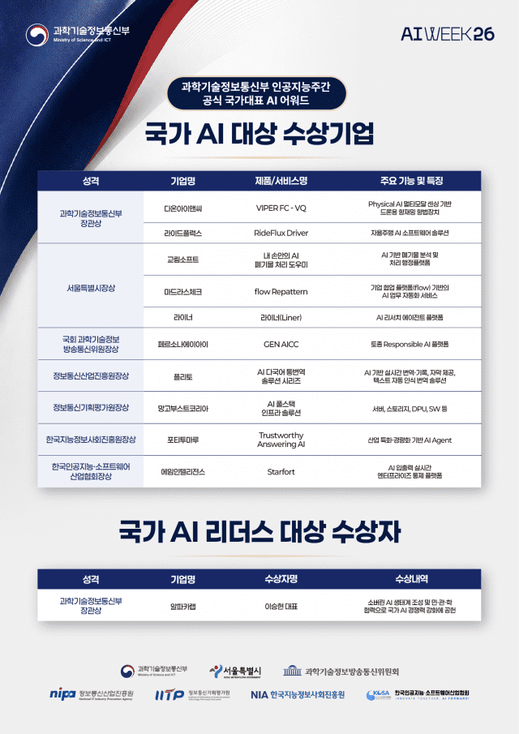

만약에 사우디아라비아 국영 AI 기업이 쓰는 핵심 기술을,
한국 스타트업이 만들고 있다면?
만약에 한국 고등학생이 AI로 쓴 논문이,
세계 최초 AI 저자 학회에서 상을 받는다면?



- 2026.09 국가 AI 대상
- 서울특별시장상
- 기업명
- 라이너(Liner)
- 주요 기능 및 특징
- AI 리서치 에이전트 플랫폼 (Hallucination 최소화)
- 최근 투자 · 2026.08 시리즈C
- 500억 원
- 누적 투자
- 940억 원
- 누적 이용자 · 2026.10
- 1,400만+